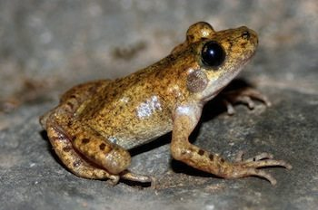

ANIMALES
| Reptiles | Mamiferos | Pájaros | Anfibios |
Anfibios
Los anfibios son los vertebrados más primitivos. Se caracterizan por tener la piel desnuda, sin pelo, ni plumas ni escamas. Algunas especies respiran a través de la piel, mientras que otras lo hacen a través de pulmones o de branquias. Son animales de sangre fría. Es decir que la temperatura de su cuerpo varía en función de las condiciones ambientales.
Los anfibios son ovíparos: se reproducen por medio de huevos. Los huevos no tienen membrana protectora (cáscara), razón por la cual realizan la puesta en medios húmedos que aseguran su hidratación y supervivencia. Al crecer, las larvas que nacen de los huevos y viven en el agua experimentan un proceso de metamorfosis que las prepara para la vida en el medio terrestre.
Así, por ejemplo, el renacuajo, que respira por branquias y no tiene extremidades, da paso a la rana, que respira por pulmones y dispone de cuatro patas preparadas para desplazarse por tierra saltando.
|  | |
| Alimoche | Triton de Montseny |